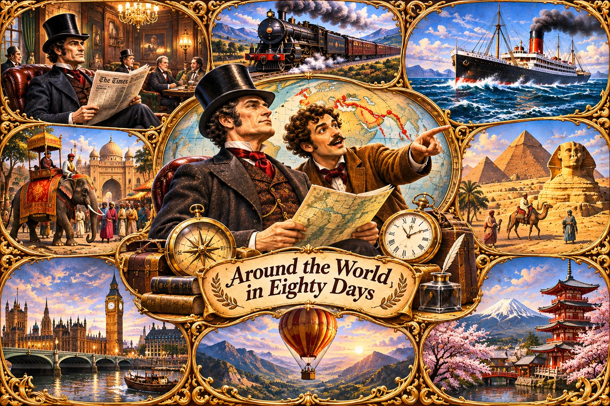

Reference artwork only • NOT a chapter illustration • NOT release-approved

This is a modern AI-generated color style reference, not a historical book plate. The montage does not depict the exact Chapter III wager. Its balloon travel and character appearances are not source accurate. It remains outside the Android reading assets.
Produce and review one authentic chapter scene at a time, tied to an original bilingual story paragraph, before offline publication.